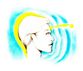
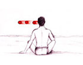

1.
Η αρχή της πραγματικής μου ζωής
2.
Η στιγμή που πρωτοείδα την αύρα
3.
Το παιχνίδι του Φωτός
4.
Προσευχή προς όλους και όλα
5.
Βλέπω την αύρα μου
6.
Αλήθειες φανερώνονται η μία μετά την άλλη
7.
Ποιόν να ευχαριστήσω για το εξαίσιο θέαμα;
8.
Η γιορτή των ψυχών
9.
Η ένωση με τον ανώτερο Εαυτό
10.
Η θέαση της αύρας με κάνει ευτυχισμένη
11.
Ένωση των σωμάτων - Ένωση των ψυχών
12.
Μπορώ να κάθομαι «εδώ» αιωνίως
13.
Τα μηνύματα που δεν θέλουμε να δούμε
14.
Η αύρα του Ήλιου
15.
Είμαστε μέσα στο Σώμα Του
16.
Κύριε σ' ευχαριστώ, φίλη μου σ' ευχαριστώ
17.
Ο κάθε άνθρωπος φέρει το δικό του φως
μέσα στο πανταχού παρόν και τα πάντα πληρόν Ον
18.
«
Θάθελα να' μουν Ουρανός
για να' χω άπειρα μάτια να σε βλέπω»
19.
Η θέαση του Φωτός θεραπεύει την ψυχή μου
20.
Βλέπω κυριολεκτικά την Αγάπη - Φως
21.
Το σημείο απ' όπου φύγαμε και όπου θα επιστρέψουμε
22.
«
Εσύ με ξέρεις, μ' έχεις ξαναδεί»
23.
Εμπιστεύομαι το ένστικτό μου
24.
Τα ουράνια τόξα που ταξιδεύουν με την ταχύτητα του φωτός
25.
Το πορτρέτο ενός φίλου
26.
Το πορτρέτο μιας φίλης
27.
Το πορτρέτο ενός φίλου και η ενεργειακή του ενίσχυση
28.
Ο μεταφυσικός είναι κι αυτός φυσικός κόσμος
29.
Βλέπω κυριολεκτικά την έμπνευση
30.
Παρατηρώ την αλλαγή της αύρας μου
31.
Απορίες κι απαντήσεις γι' αυτά που βλέπω
32.
Δείτε βιολετί Φως
33.
Συστηματική παρατήρηση της αύρας
34.
Η μέρα που εμφανίστηκαν οι Δάσκαλοι
35.
Οι αιθερικές μορφές και η πορφύρα
36.
Η έρευνα για την αύρα συνεχίζεται
37.
Η Αγάπη θα γεμίσει τα πάντα
38.
Αναλογίες ...
39.
Βλέπω κυριολεκτικά αυτό που ο κόσμος αποκαλεί θαύμα
40.
Βλέπω τους οδηγούς μας
41.
Βλέπω την αύρα μιας φίλης
42.
Θεραπευόμαστε συνδεόμενοι με το Φως
43.
«
Ελευθέρωσε τον εσωτερικό σου άγγελο από τη φυλακή»
44.
Ένας χαιρετισμός από τον πνευματικό κόσμο
45.
Η κατάργηση του χώρου
46.
Όταν ανοίγουμε τους εαυτούς μας στο Φως διευρύνονται όλες οι αισθήσεις μας
47.
Τα ... φαντασματάκια
48.
Τα αληθινά Χριστούγεννα
49.
Οι Μονόκεροι και οι Κένταυροι
50.
Η οδηγός μου
51.
Το σύμπαν έχει χιούμορ
52.
Ο φόβος, η ασθένεια και η θεραπεία
53.
Η οχτάχρονη κόρη μιας φίλης
54.
Τα πυροτεχνήματα μας θυμίζουν τον πνευματικό κόσμο
55.
Βλέπω το Άστρο
56.
Η μεταβίβαση ενέργειας
57.
Η σημασία της λέξης γαλαζοαίματος
58.
Βλέπω την αύρα της φίλης κι όταν δεν είναι εδώ
59.
Η αγάπη ενώνει τον φυσικό και τον αιθερικό κόσμο
60.
Ο οδηγός «κατεβαίνει» κι εμείς «ανεβαίνουμε»
για να συναντηθούμε
61.
Οι Δάσκαλοι στέλνουν Φως στο έργο
jjurs etsrtj setj es
yhjxyfjxyf
jdtjdtjdzjnd h zsjset jtj
Back